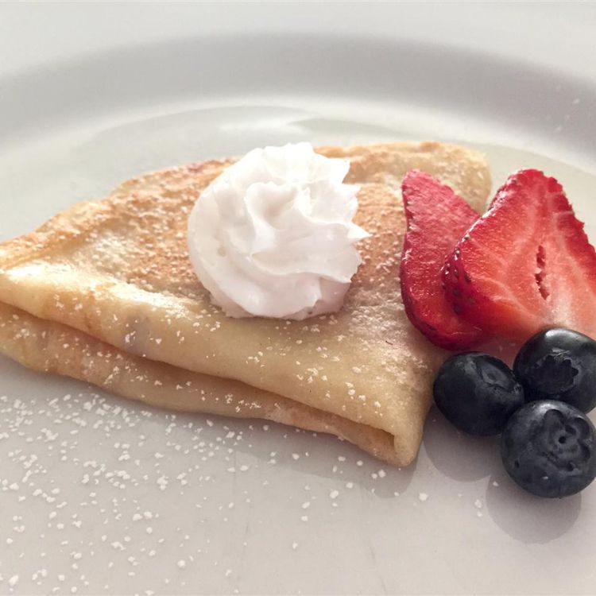

Vegan Crepes

Name one food any vegan misses eatin. that's right crepes. This recipe won't need egg replacement either. For a twist, try adding hazelnut syrup, or any other flavor you like.
Ingredients
- 1 cup unbleached all-purpose flour
- 1/2 cup soy milk
- 1/2 cup water
- 1/4 melted soy margarine
- 2 tablespoons maple syrup
- 1 tablespoon turbinado sugar
- 1/4 teaspoon salt
Directions
- Mix flour, soy milk, water, 1/4 cup soy margarine, maple syrup, sugar, and salt together in a large mixing bowl until combined; cover and chill for 2 hours.
- Lightly grease a 6-inch skillet with some soy margarine. Heat the skillet over medium heat.
- Pour 2 to 3 tablespoons of batter into the skillet and immediately rotate the skillet to spread batter out in a thin layer. Cook until the top of the crêpe is no longer wet and the bottom has turned light brown, 1 to 2 minutes. Run a spatula around the edge of the skillet to loosen crêpe; flip and cook until the other side has turned light brown, about 1 minute more. Repeat with remaining batter.
Home